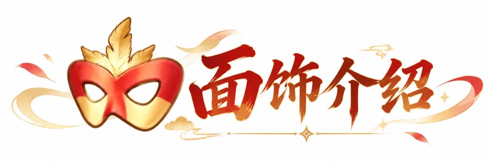
每个面饰由 7 个部件组成 ，包含 5 个普通部件和 2 个特殊部件 ;每个部件提供 1~2 条基础属性 ，会随部件等级提升而提升 ;
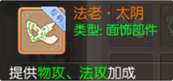
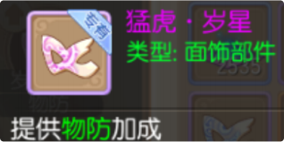
所有部件均解锁后 ，该面饰激活 ，面饰等级与最低等级部件相同
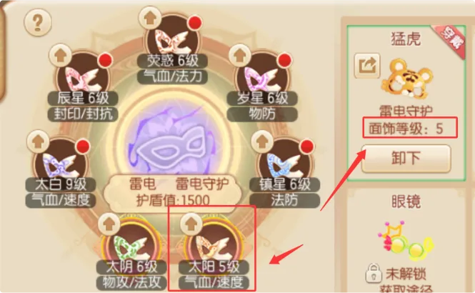
面饰激活后提供技能选择和佩戴显⽰ ; 跟腰饰一致 ，只有老时装穿戴才显⽰ ，新时装均不显⽰！
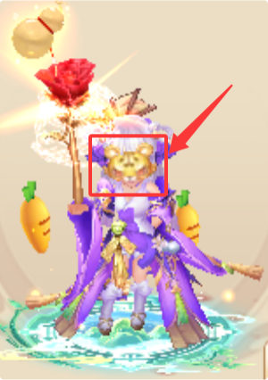
普通部件升级需要星辰粉 ，通过分解面饰部件可以获得星辰粉
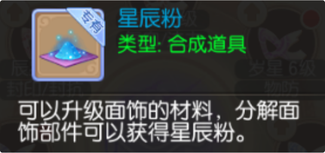
特殊部件升级需要部件本体和星辰粉 ; 面饰和面饰部件最高等级为 20 级。
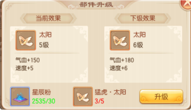
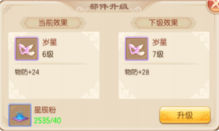
玩家拥有的面饰属性为所有面饰已解锁部件的属性之和 ;
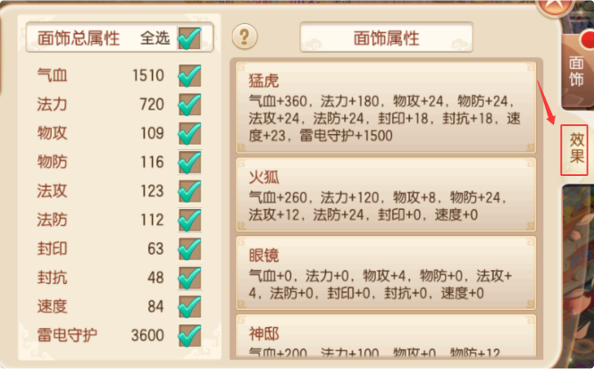
当有至少一套面饰被激活后 ，玩家可以选择技能 ;
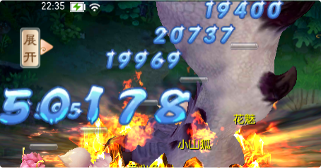
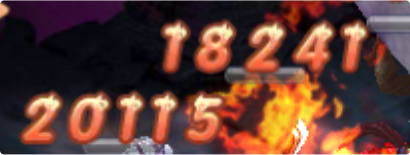
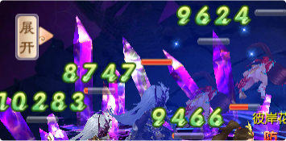
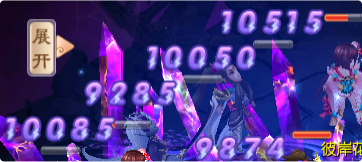
在技能选择中可以更换想要的技能 ，每天第一次更换花费金币 ，后续花费元宝
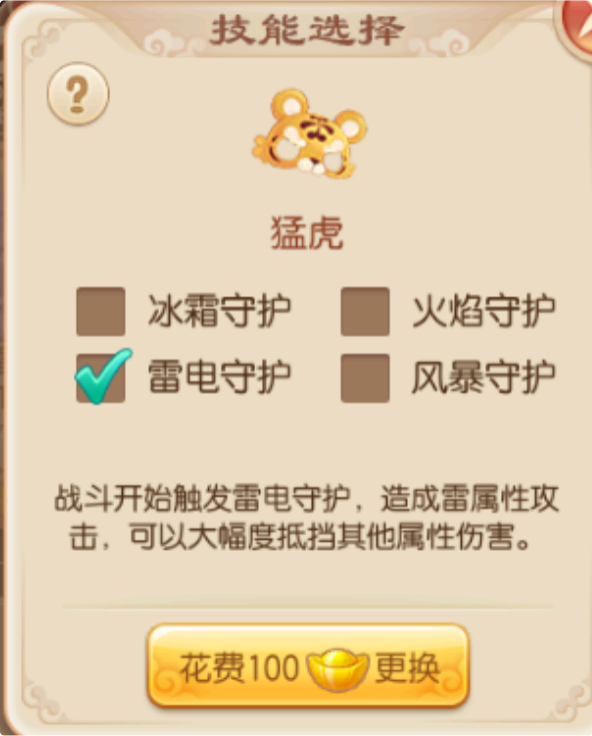
技能的选择 ，决定了玩家具有的攻击属性类型和护盾属性类型(二者相同)
单个面饰提供的护盾值随面饰等级提升而提升 ，所有面饰护盾值总和即为玩家当前拥有的护盾值 ;
相同属性攻击相同属性的护盾时 ，伤害较高 ; 不同属性攻击不同属性的护盾时 ，伤害较低 ;无属性攻击任何属性护盾时 ，伤害最低 ;
进入战斗后 ，护盾自动赋予玩家 ，可抵御一定的攻击伤害 ，如果伤害高于护盾值 ，则玩家会受到溢出值的伤害。
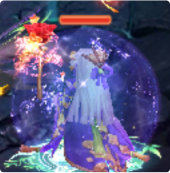
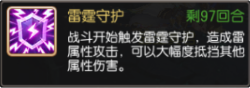